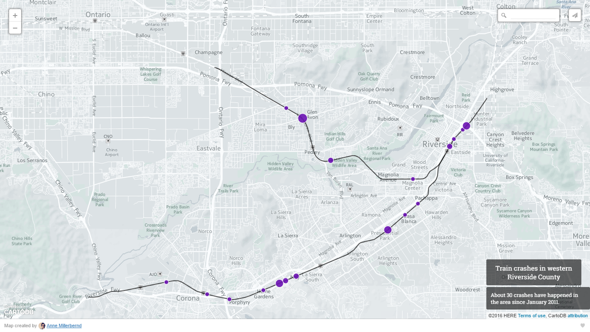
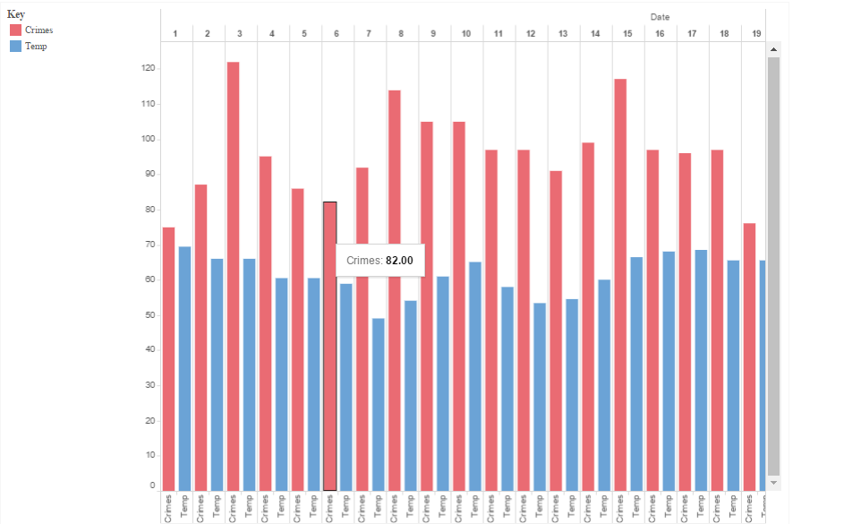

I’m a journalist from Minnesota.
Currently writing the earliest breaking news in Riverside, California.
Aspiring dog owner/Cake Boss.
Clips
4 adults, 1 child killed in New Year’s Eve crash is a story about four of the five people who died. I was working as the nighttime reporter on New Year’s Day and we decided to pursue some background on the accident. I found my sources mostly on Facebook.
An Unforgotten History was a story I wrote after I was assigned to write about these two WWII-era bombers the local air museum was getting and the granddaughter of a man who flew one.
Hotels on the horizon was a longer story I did when the Daily staff began to notice that hotels were popping up around our Minneapolis campus and the strings of giant housing complex pitches seemed to be coming to a close.
Driver with paraplegia befriends new puppy after Lake Minnetonka accident was a story that I wrote as a follow-up to a story about a paraplegic man whose truck fell through the ice on a lake. He made it out of the truck OK, but his dog didn't.
Arson suspect accused of insurance fraud was a story I wrote when a man was arrested four years after a his home was burned down.
Data Visualization
This is a map I made for a story about train crashes in western Riverside County between 2011 and early 2016.
This was a graphic I made after my boss asked me one day in April whether I thought there was a correlation between slow crime days and the weather. I made it in my spare time for no reason. It would seem that there is not.
Résumé
Riverside Press-Enterprise | Morning cops reporter | Oct. 2015-Present
- Brief public safety news and report longer stories
- Write and report community features as assigned
The Forum of Fargo-Moorhead | News Intern | June-Aug. 2015
- Reported and wrote assignments for print and web
- Briefed and tweeted out breaking news
Minneapolis Star Tribune | Student Digital Reporter | Jan.-May 2015
- Covered breaking news, briefed public safety and other types of short stories
- Shared bylines with other reporters on longer assignments
St. Paul Pioneer Press | Student Public Safety Reporter | Sept.-Dec. 2014
- Briefed breaking news
- Wrote feature stories and longer stories from court hearings
Minnesota Daily | Associate Editor | Jan.-May 2015
- Worked my way up from intern to editor throughout my time at the University of Minnesota
- Edited other reporters' work for grammar, style and coherence
- Helped six reporters navigate their beats while working on longer stories of my own
Education
B.A. in Journalism from the University of Minnesota - 2015
Data Visualization and Analysis Tools
Datawrapper | Tableau | Fusion Tables | Microsoft Excel | Microsoft Access | Open Refine | CartoDB | Beginner in R
Social Media Tools
Twitter | Tumblr | Snapchat | Facebook | LinkedIn | Pinterest | Vine | Instagram | Google+
Other Skills
FOIA | AP Style | Basic HTML | Basic CSS | Basic JavaScript | Basic InDesign | Conversational in Spanish | Google Analytics | Parse.ly
About
I grew up in a small Minnesota suburb called South St. Paul. After graduation, I went on to the University of North Dakota. For North Dakota-related reasons, and because Minneapolis has a better media market, I left for the University of Minnesota.
I took an internship back in Fargo and then moved out to California just because I wanted a change in scenery. I now work as the morning cops reporter for the Press-Enterprise (My stuff sits mostly in the box on the right-hand side at pe.com).
Some quick facts:
- I am a vegetarian, for no other reason than I simply don’t like the consistency of meat.
- My only brother, Mike, graduated with a mathematics degree, and my parents are both in accounting. Christmas is weird.
- I like to spend my spare time using public (or requested, but still public) data to make fancy visualizations. Those are a work-in-progress, but I’ve gotten pretty good if you ask me.
- I worked at hair salons and spas during college as a receptionist – partially because of electric bills, and partially because I liked getting to know the different clients who would come in.
Contact me:
ammillerbernd@gmail.com